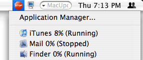

Using App Stop's Menubar Item
App Stop's menubar item is the entry point all of App Stop's features. You can quit the application, set preferences, and quickly pause/resume applications from it's drop-down menu.
New in App Stop 2.0 is the ability to activate your application (bring it to the front) using the menubar item. Simple hold ⌘ while clicking on the icon in the menubar and instead of bringing up a drop-down menu, it will activate App Stop and bring any of App Stop's currently open windows to the front.
